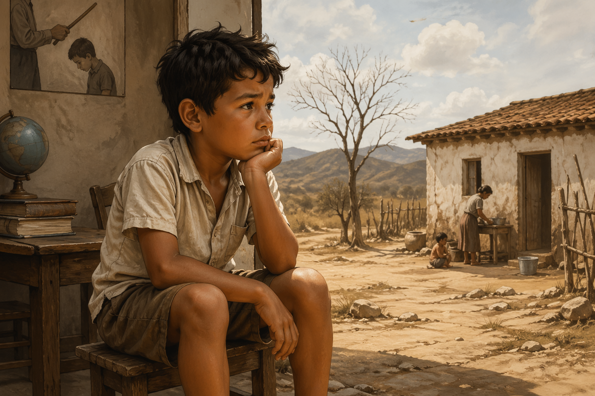

Análise da obra Infância de Graciliano Ramos
Dando continuidade ao seu material, agora vamos aprofundar uma das obras mais importantes da literatura brasileira e muito recorrente em vestibulares: Infância, de Graciliano Ramos.
Neste guia, você encontrará um resumo completo, uma análise crítica e propostas de redação alinhadas à obra, com foco no que pode ser cobrado em provas e redações.

Contexto histórico da obra
A obra Infância, publicada em 1945, está inserida em um período de profundas transformações políticas, sociais e culturais no Brasil. O livro remete às memórias do final do século XIX e início do século XX, especialmente no Nordeste brasileiro, região marcada por desigualdades estruturais, seca recorrente e forte hierarquização social.
Durante esse período, o Brasil ainda vivia os impactos da transição do regime imperial para a República (proclamada em 1889). Apesar das mudanças políticas, a estrutura social permanecia profundamente desigual, com concentração de poder nas mãos das elites agrárias. No Nordeste, o coronelismo era uma prática comum, caracterizada pelo domínio político e econômico de grandes proprietários rurais sobre a população local.
A sociedade era marcada por relações autoritárias, tanto no âmbito público quanto privado. Esse autoritarismo se refletia diretamente nas estruturas familiares e educacionais, como observado na obra. A educação, por exemplo, era baseada na disciplina rígida, na memorização e, muitas vezes, na punição física, evidenciando um modelo pedagógico tradicional e excludente.
Além disso, o contexto nordestino apresentado na obra revela uma realidade de dificuldades econômicas e sociais, agravadas por fenômenos como a seca e a falta de políticas públicas eficazes. Esse cenário contribuiu para a formação de uma sociedade marcada pela desigualdade, pela limitação de oportunidades e pela reprodução de práticas autoritárias.
Do ponto de vista literário, Infância se insere na segunda geração do Modernismo brasileiro (década de 1930), também conhecida como fase regionalista. Esse movimento buscava retratar a realidade social do país de forma crítica e realista, com destaque para as desigualdades regionais. Autores dessa geração, como Graciliano Ramos, tinham como objetivo denunciar problemas sociais e explorar a complexidade psicológica dos personagens.
Assim, a obra não apenas narra experiências individuais, mas também funciona como um retrato histórico e social do Brasil, permitindo compreender como o contexto da época influenciava diretamente a formação do indivíduo.
Biografia do autor
Graciliano Ramos nasceu em 27 de outubro de 1892, na cidade de Quebrangulo, no estado de Alagoas. Passou a infância em diferentes cidades do Nordeste, vivenciando experiências que posteriormente serviriam de base para suas obras literárias, especialmente Infância.
Desde cedo, teve contato com uma educação rígida e com um ambiente familiar marcado por disciplina severa, elementos que influenciaram profundamente sua visão de mundo e sua produção literária. Ao longo da vida, exerceu diversas profissões, como jornalista, comerciante e funcionário público.
Graciliano Ramos destacou-se como um dos principais nomes do Modernismo brasileiro, especialmente da chamada geração de 1930. Sua obra é marcada pelo estilo direto, linguagem concisa e forte crítica social, abordando temas como desigualdade, injustiça, miséria e opressão.
Entre suas principais obras, destacam-se Vidas Secas, São Bernardo, Angústia e Infância. Seus livros são reconhecidos pela profundidade psicológica dos personagens e pela representação fiel da realidade nordestina.
Além de sua atuação como escritor, também teve participação na vida política. Foi prefeito da cidade de Palmeira dos Índios, em Alagoas, onde se destacou pela gestão rigorosa e pelos relatórios administrativos detalhados, que chamaram atenção pela qualidade literária.
Durante o período do Estado Novo, foi preso em 1936 sob acusação de envolvimento com o comunismo, experiência que marcou profundamente sua vida e resultou na obra Memórias do Cárcere, publicada postumamente.
Graciliano Ramos faleceu em 20 de março de 1953, no Rio de Janeiro. Seu legado permanece como um dos mais importantes da literatura brasileira, sendo amplamente estudado em escolas e universidades, além de frequentemente cobrado em vestibulares e exames nacionais.
Resumo da obra Infância
Publicado em 1945, Infância é um livro autobiográfico em que o autor revisita suas memórias da infância vivida no Nordeste brasileiro, especialmente em Alagoas e Pernambuco.
A narrativa não segue uma ordem linear rígida, sendo composta por episódios marcantes da vida do autor quando criança. Entre os principais aspectos retratados, destacam-se:
- A relação difícil com os pais, marcada por rigidez e autoritarismo
- A educação baseada no medo e na punição
- O ambiente social do sertão nordestino
- A descoberta da leitura e da linguagem
- O sentimento de solidão e incompreensão
A obra apresenta uma infância dura e sem idealizações, revelando o processo de formação de um indivíduo sensível em meio a um contexto opressor.
Análise da obra
1. A infância sem romantização
Diferente de narrativas idealizadas, Infância apresenta uma visão crítica e realista da infância. O período é marcado por medo, repressão e ausência de afeto.
Essa abordagem aproxima a obra do Realismo e antecipa características do Modernismo, principalmente pela crítica social.
2. Autoritarismo familiar e social
A figura paterna representa uma autoridade rígida e muitas vezes injusta, refletindo a estrutura patriarcal da sociedade da época.
- Imposição de regras sem diálogo
- Uso da violência como forma de educação
- Distanciamento afetivo entre pais e filhos
3. Educação opressora
A escola é retratada como um ambiente de repressão, onde o aprendizado ocorre por meio do medo e da punição.
- Qual é o verdadeiro papel da educação?
- A escola deve formar cidadãos críticos ou apenas disciplinar?
4. Contexto social nordestino
O sertão nordestino aparece como um espaço marcado por dificuldades, desigualdades e limitações sociais, influenciando diretamente a formação do narrador.
5. Construção da identidade
Ao revisitar suas memórias, o autor evidencia como a infância molda o indivíduo.
- Experiências traumáticas deixam marcas duradouras
- A memória é seletiva e interpretativa
- A identidade é construída ao longo do tempo
Possíveis temas de redação
- Os impactos da educação autoritária na formação do indivíduo
- A importância do afeto na infância para o desenvolvimento humano
- Desafios da educação no Brasil: entre disciplina e formação crítica
- A influência do meio social na construção da identidade
- Violência na infância: herança cultural ou problema social?
Possível tese para redação
A formação do indivíduo está profundamente ligada às experiências vividas na infância, sendo que contextos marcados por autoritarismo e ausência de afeto podem comprometer o desenvolvimento emocional e social, como evidenciado na obra Infância, de Graciliano Ramos.
Conclusão
A obra Infância é essencial para compreender não apenas a trajetória de :contentReference[oaicite:4]{index=4}, mas também questões sociais ainda atuais.
- Educação autoritária
- Violência na infância
- Desigualdade social
- Formação da identidade
Além de ser uma leitura fundamental para vestibulares, a obra serve como base sólida para argumentação em redações do ENEM.
Referências
- RAMOS, Graciliano. Infância. Rio de Janeiro: Record, 1945.
- CANDIDO, Antonio. Formação da Literatura Brasileira. Rio de Janeiro: Ouro sobre Azul.
- BOSI, Alfredo. História Concisa da Literatura Brasileira. São Paulo: Cultrix.
- MOISÉS, Massaud. A Literatura Brasileira através dos textos. São Paulo: Cultrix.
- Estudos sobre o Modernismo brasileiro e a geração de 1930.
Explore Outros Conteúdos
Continue seus estudos acessando outras seções do site Mestre Kira: